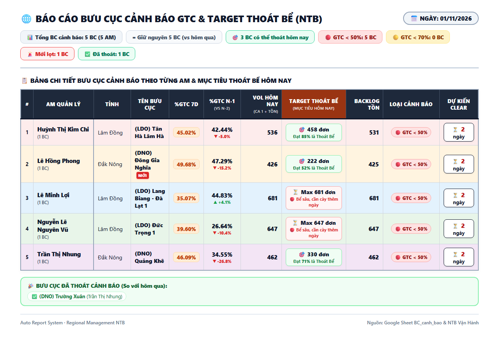
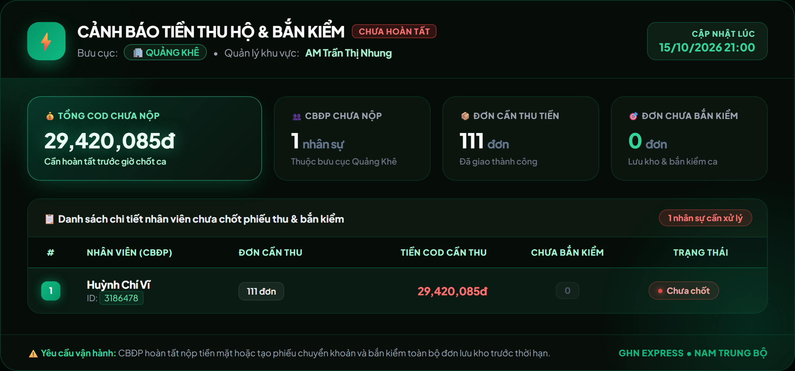
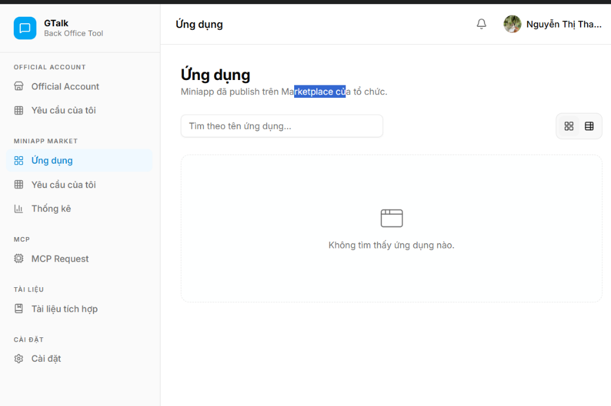

I. GIẢI QUYẾT TRIỆT ĐỂ 4 GÓP Ý CỦA BAN GIÁM KHẢO TẠI CHECKPOINT 1
1. Đo lường tác động thật bằng số liệu định lượng (Before vs. After)
Không dừng lại ở việc tiết kiệm thời gian làm báo cáo (từ 45 phút → 0 phút), sau hơn 2 tháng vận hành thực chiến hàng ngày trên 85 bưu cục NTB (từ tháng 8 đến nay), hệ thống đã tạo ra bước nhảy vọt định lượng rõ rệt:
| Chỉ số vận hành cốt lõi |
Trước khi có Tool (Đỉnh T9) |
Sau khi triển khai Tool (Hiện tại) |
Tác động cải thiện thực tế |
| Quy mô bưu cục bất ổn toàn vùng |
Đỉnh điểm 17 bưu cục |
2 bưu cục |
Kéo giảm -88.2% bưu cục khủng hoảng, ổn định toàn vùng. |
| Tỷ lệ bưu cục đạt Target %GTC ngày |
~68.0% |
84.5% |
Tăng +16.5% số bưu cục toàn vùng về đích thành công. |
| Số ca trượt target sát nút (< 5 đơn) |
6 - 8 bưu cục/ngày |
1 - 2 bưu cục/ngày |
Giảm ~75% số bưu cục bị lỡ mốc thưởng đáng tiếc. |
| Cứu "thoát bể" khung giờ vàng (16h - 20h) |
Hiếm khi kịp cứu |
4 - 6 bưu cục/ngày |
Nhờ tin nhắn đếm ngược số đơn thiếu, AM kịp dồn lực. |
| Tỷ lệ hoàn tất Phiếu thu & Bắn kiểm COD 22h |
~78.0% (sót nhiều) |
> 98.5% |
Triệt tiêu gần như 100% tình trạng đọng nộp COD qua đêm. |
2. Hạ tầng thực thi Cloud CI/CD 24/7 & Cào dữ liệu trực tiếp
Khắc phục triệt để hạn chế chạy script máy cá nhân và đọc qua Sheet trung gian ở Checkpoint 1:
- Chuyển giao 100% lên Cloud GitHub Actions: Đóng gói toàn bộ workflow chạy tự động trên máy chủ Cloud Ubuntu Runner 24/7. Hoạt động độc lập không phụ thuộc máy cá nhân.
- Lấy số trực tiếp từ Dashboard GHN: Headless browser tự động cào số liệu chuẩn từ hệ thống Dashboard vận hành của GHN, triệt tiêu độ trễ dữ liệu.
- Lập lịch phát sóng chuẩn xác theo 5 khung giờ vàng:
14:00 (Năng suất & Target ca 2) → 16:00 (Target đếm ngược thoát bể nước rút chiều) → 18:00 (Chốt ca chiều & kích hoạt ca tối) → 20:00 (Tác chiến ca tối bóc tách đơn đang giữ) → 21:00 (Tổng kết chốt ngày) → 21:00 & 22:00 (Quét API Lastmile nhắc Phiếu thu & Bàn kiểm COD).
3. Bảo mật tuyệt đối & Phân quyền dữ liệu nhân sự (Data Isolation)
Tuân thủ nghiêm ngặt 8 Quy Tắc Vàng An Toàn Thông Tin GHN:
- Không gửi năng suất nhân sự vào kênh chung: Dữ liệu chứa Mã NV, Tên NV, Số đơn đã giao/còn giữ được lọc tách biệt theo từng AM (
df_am = df[df['AM'] == am_name]).
- Routing chuẩn qua AM_CHANNEL_MAP: Hệ thống tự động phân luồng và gửi tin nhắn vào đúng kênh chat riêng của 19 AM (19 ID Group tác chiến riêng biệt). Tuyệt đối không rò rỉ chéo thông tin.
- Quản lý Secret qua Cloud Vault: Mã token Bot GTalk và Cookie xác thực được mã hóa bằng GitHub Secrets, không commit bất kỳ mã bí mật nào vào repository.
II. TÍNH NĂNG ĐỘT PHÁ MỚI: TARGET ĐẾM NGƯỢC THOÁT BỂ & CẢNH BÁO PHIẾU THU COD
Đây là tính năng chiến lược được phát triển bổ sung từ nỗi đau bỏng rát ngoài hiện trường:
- Nỗi đau bưu cục bất ổn: Giai đoạn cao điểm tháng 9, toàn vùng NTB từng có ngày bùng phát đỉnh điểm tới 17 bưu cục đồng loạt rơi vào nhóm bất ổn (%GTC 7 ngày < 45% hoặc tụt > 30% so với phong độ đỉnh). Khi đó AM rất lúng túng vì không biết phải giao thêm bao nhiêu đơn thì bưu cục mới thoát khỏi báo động đỏ.
- Giải pháp thuật toán AI: Tự động tính ngược từ Volume hôm nay (Ca 1 + Tồn) và 6 ngày trước đó để đưa ra chỉ số: "Target Thoát Bể Hôm Nay (Giao đúng bao nhiêu đơn là thoát bể?)".
- Hình thức gửi thực tế: Bắn trực tiếp qua Tin nhắn tương tác GTalk bóc tách chi tiết từng nhân viên theo 5 mốc giờ vàng, giúp AM copy paste tag tên bưu tá đôn đốc trong 2 giây.

Hình 1: Báo cáo Ra-đa Bưu Cục Bất Ổn ngày 01/11/2026 với cột "Target Thoát Bể Hôm Nay" và badge vinh danh bưu cục (DNO) Trường Xuân đã thoát cảnh báo thành công.
MINH CHỨNG SỐ HỌC TỪ BÁO CÁO NGÀY 01/11/2026:
• Bưu cục (DNO) Đông Gia Nghĩa: Cần giao đúng 222 đơn (đạt 52% là thoát bể hôm nay).
• Bưu cục (DNO) Quảng Khê: Cần giao đúng 330 đơn (đạt 71% là thoát bể hôm nay).
• Bưu cục (LDO) Tân Hà Lâm Hà: Cần giao đúng 458 đơn (đạt 85% là thoát bể hôm nay).
• Bưu cục (DNO) Trường Xuân: Sau khi hoàn thành target hôm qua, hôm nay chính thức nhận huy hiệu `🎉 ĐÃ THOÁT CẢNH BÁO THÀNH CÔNG`!

Hình 2: Phân hệ quét API Lastmile cảnh báo chưa tạo Phiếu thu COD & Bàn kiểm lúc 21h-22h
🛡️ NÂNG CẤP BẢO VỆ DÒNG TIỀN COD:
Tự động quét API Lastmile GHN vào 21:00 & 22:00. Nếu bưu cục chưa tạo phiếu thu hoặc chưa hoàn tất bàn kiểm tiền mặt, hệ thống tự động phát cảnh báo đích danh bưu cục vào kênh AM chung.
👉 Giúp tỷ lệ hoàn tất nộp tiền COD đúng hạn toàn vùng NTB đạt kỷ lục > 98.5%.
III. LỘ TRÌNH CHUYỂN DỊCH LÊN GTALK MINIAPP FRAMEWORK CỦA GHN
Bám sát tài liệu chỉ đạo của Khối Công Nghệ GHN về việc "Chuyển dịch các ứng dụng nội bộ từ hosting cá nhân bên ngoài về nền tảng GTalk Miniapp Framework":
- Đăng ký cổng chính thức: Đã tạo hồ sơ ứng dụng trên GTalk Back Office Tool (mục Miniapp Market & MCP) với tên:
Target Tracker & Auto-Ops NTB.
- Chuẩn hóa Design System: Thiết kế UI responsive theo chuẩn Brand Identity GHN (Cam
#FF5200 và Xanh #006FAD).
- Sẵn sàng cho Vòng Showcase (17/11): Nâng cấp từ thông báo tin nhắn sang GTalk Miniapp tương tác 2 chiều. Đưa toàn bộ module tra cứu 5 mốc Target động (40% - 60%) lên giao diện App để AM tra cứu on-demand.

Hình 3: Đăng ký ứng dụng trên GTalk Back Office Tool
Hình 4: Thiết kế Mockup 5 mốc Target động (40% - 60%) chuẩn bị tích hợp vào GTalk Miniapp tại Showcase 17/11